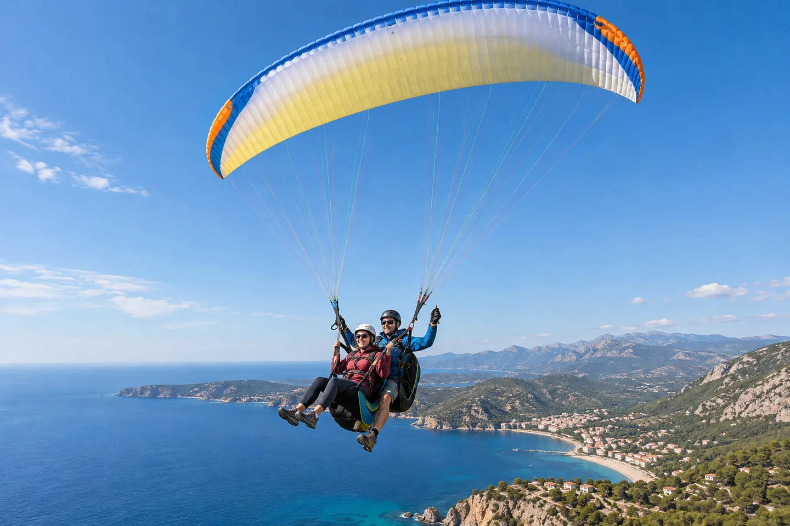

Qué incluiría
- Piloto cualificado en caso real.
- Equipo homologado.
- Briefing de carrera y aterrizaje.
Una experiencia de vuelo donde el viento decide la ventana. Despegar también es saber esperar.

Calzado cerrado, ropa cómoda, cortavientos y peso declarado con honestidad.
Viento, rachas, térmicas, niebla, zona de despegue, aterrizaje o peso no compatible.
Tropiezos en carrera, mareo, turbulencia, aterrizaje irregular y ansiedad por altura.
No recomendable con vértigo severo, lesiones que impidan correr o miedo intenso al vuelo.